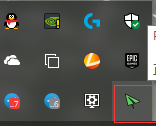

ShadowsocksR是windows上一款SSR客户端软件，项目地址 https://github.com/shadowsocksrr/shadowsocksr-csharp
访问项目的发布页面：https://github.com/shadowsocksrr/shadowsocksr-csharp/releases,
点击Lastest release版面，点击Assets下的下载链接，即可下载软件
下载完成后，可以获得一个压缩包，解压压缩包，打开软件,在任务栏会出现软件图标，如下图所示：
右键点击任务栏上的软件图标，依次点击服务器订阅，SSR服务器订阅设置，打开订阅设置窗口
点击Add，在网址那里粘贴复制的订阅地址，点击确定，即可保存订阅信息
右键点击任务栏上的软件图标，依次点击服务器订阅，更新SSR服务器订阅，软件将自动获取订阅信息
右键点击任务栏上的软件图标，依次点击服务器，选择适合自己的服务器
右键点击任务栏上的软件图标，依次点击系统代理模式，PAC模式,设置SSR为分流模式
右键点击任务栏上的软件图标，依次点击PAC，更新PAC为GFWList,更新PAC为为GFWList，这样访问被墙的网站将会自动使用代理访问。
右键点击任务栏上的软件图标，选择选项设置，在打开的窗口中，我们可以看到一行本地端口,后面文本框中的数字即是ShadowsocksR监听端口号
拿这个端口号，可以配合SwitchyOmega以达到更加自由的分流配置
ShadowsocksR 应该是windows下支持SSR最好的客户端，不过他的断流问题一直都没有得到解决。